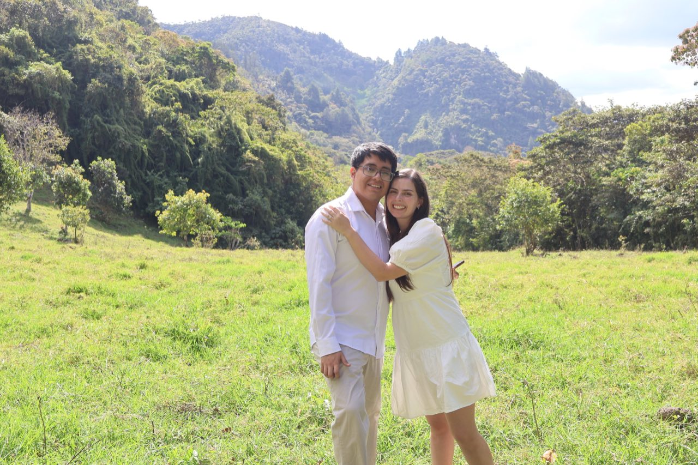
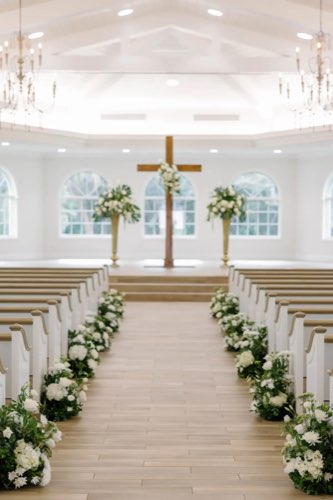
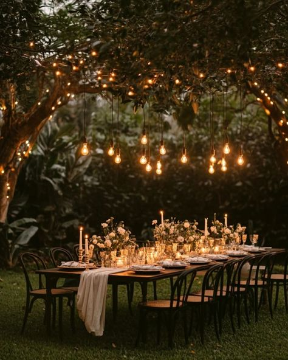
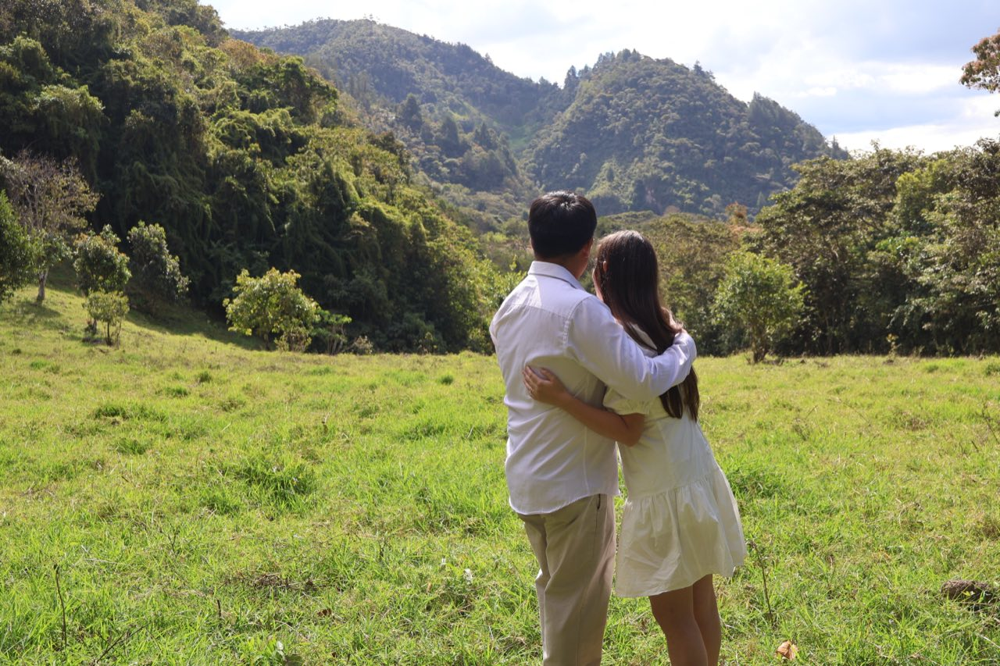

André
Krisli
2:30 p.m.
Iglesia Vida Nueva Rinconada
La Molina — Lima

Foto de portada — coloca img/p3.jpg Foto — coloca img/p1.jpg
Foto — coloca img/p1.jpg
Queremos celebrar contigo
Después de siete años juntos llegamos a este día, y no lo imaginamos sin las personas que nos acompañaron en el camino. Nos hará muy felices tenerte con nosotros.
Sábado 9 de enero de 2027, 4:00 p.m. Iglesia Vida Nueva Rinconada.

En un local aparte, después de la ceremonia. Av. La Molina 1935, La Molina.

El día, hora por hora
Recibimiento en el atrio de la iglesia.
Iglesia Vida Nueva Rinconada, La Molina.
Brindis de bienvenida mientras tomamos las fotos.
Mesas asignadas; encuentra tu nombre en la entrada.
La pista queda abierta el resto de la noche.
Nos despedimos con una última canción.
Los datos que necesitas
Sábado 9 de enero de 2027, 4:00 p.m.
La Rinconada, La Molina — Lima.
Dirección exacta por confirmar
Hay estacionamiento dentro del recinto. En taxi o app, pide que te dejen en la puerta principal.
Después de la ceremonia.
Av. La Molina 1935, La Molina — Lima.
Tu presencia es el regalo
Si además quieres acompañarnos con un detalle, estos son nuestros datos.
A nombre de Krisli por confirmar
Banco, titular y números reales por confirmar
Elige un regalo puntual y aporta por Yape o transferencia.
Ellos, terno oscuro y corbata. Ellas, vestido largo o midi. Te pedimos con cariño reservar el blanco para la novia.
¿Nos acompañas?
Responde antes del 30 de octubre de 2026. Cada invitación es personal.

Foto — coloca img/p2.jpgLo que suelen preguntarnos
La celebración es solo para adultos, con excepción de los niños que forman parte de la ceremonia.
Nos ayudaría mucho en la organización que sea lo antes posible; sin embargo la fecha límite es hasta el 30 de octubre de 2026. Después ya no podremos agregar cubiertos.
Solo si tu invitación lo indica. Al confirmar verás cuántos lugares tienes reservados.
Sí, alrededor del recinto y contaremos con personal de seguridad. Llega con 20 minutos de anticipación.
Oren por nosotros
Te pedimos, con mucho cariño, que puedas ir orando por este día tan especial y por la nueva etapa que comenzamos juntos.
Con mucho amor,
André & Krisli